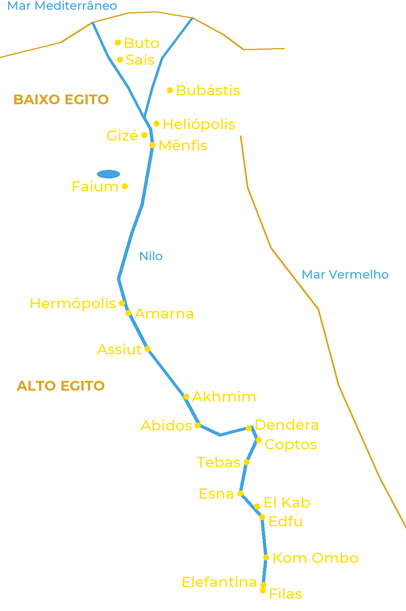

O Egito antigo estendia-se ao longo do Nilo por mais de mil quilômetros. Ao norte, o rio se divide em
vários braços para formar o delta: é o Baixo Egito. Ao sul estende-se o vale, o Alto Egito, até a
primeira catarata, em Assuã. Cada cidade tinha seus deuses, e os maiores centros religiosos deram nome
às cosmogonias.

Os principais centros de culto, do delta à primeira catarata
Baixo Egito
Buto: Uadjet, a deusa naja protetora do Norte.
Saís: Neit; capital da XXVI dinastia.
Bubástis: Bastet, cuja grande festa Heródoto descreveu.
Heliópolis: Atum e Rá; berço da cosmogonia mais difundida.
Gizé: as grandes pirâmides e a Esfinge, venerada como Harmakhis.
Mênfis: Ptah, Sekhmet, Nefertum e o touro Ápis; necrópole de Sokar em Saqqara.
Faium: Sobek e seus crocodilos sagrados.
Alto Egito
Hermópolis: Toth e a Ogdóade.
Amarna: Áton; a capital fundada por Akhenaton.
Assiut: Upuaut, “aquele que abre os caminhos”.
Akhmim e Coptos: Min, deus da fertilidade e das trilhas do deserto.
Abidos: Osíris, cujos mistérios ali eram celebrados.
Dendera: Hathor.
Tebas: Amon, Mut e Khonsu (Karnak e Luxor), Montu; necrópoles reais da margem oeste.
Esna: Khnum, Neit e Heka.
El Kab: Nekhbet, a deusa abutre protetora do Sul.
Edfu: Hórus.
Kom Ombo: Sobek e Hórus, o Velho, num templo duplo.
Elefantina: Khnum, Satet e Anuket, guardiões da cheia.
Filas: Ísis, cujo templo permaneceu aberto até o século VI.